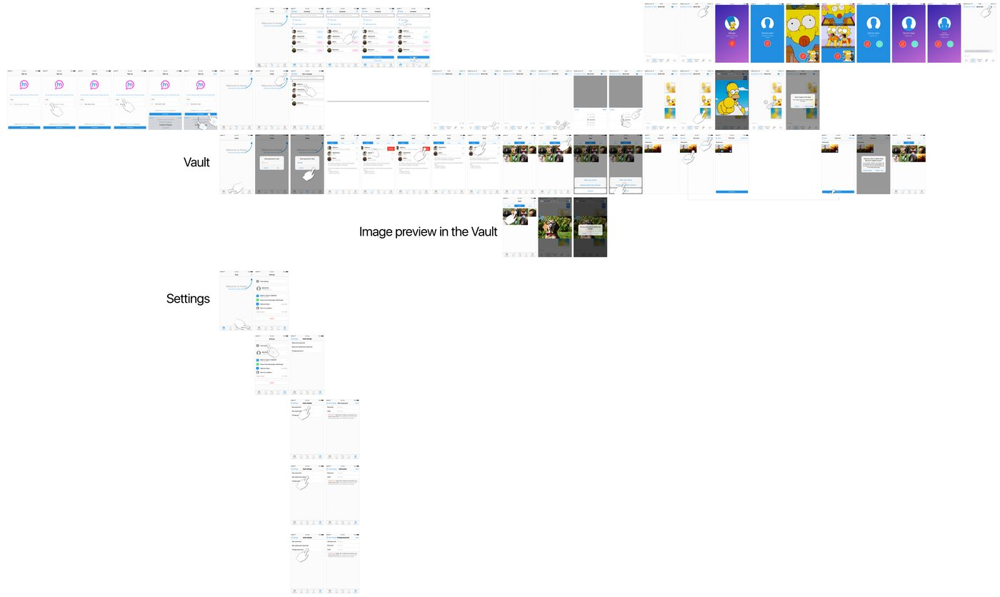
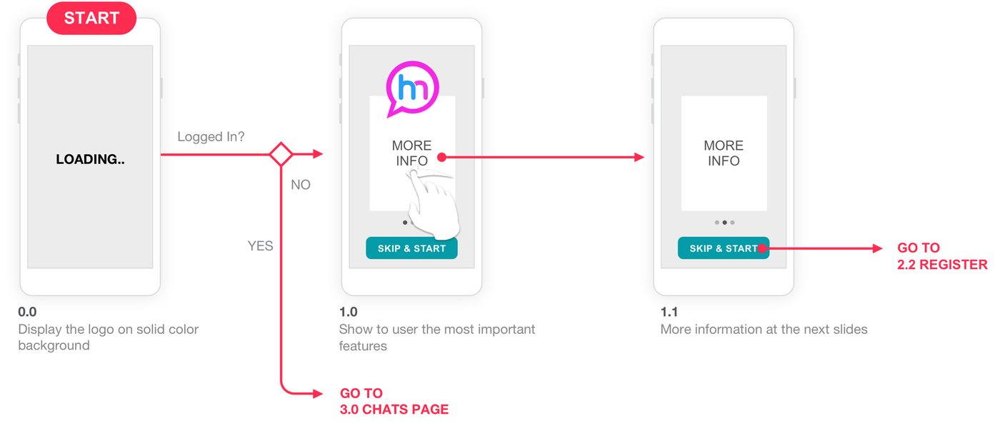
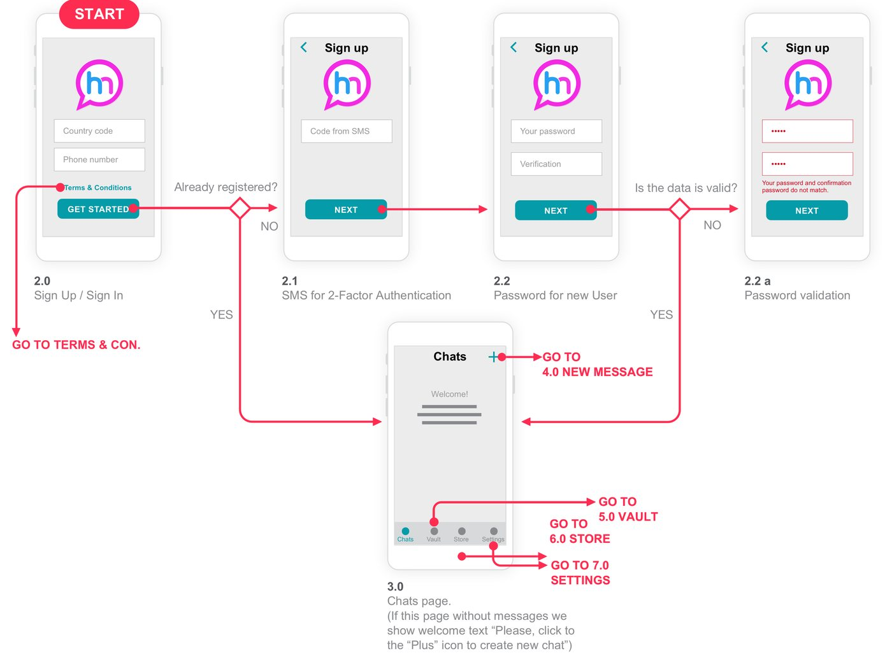
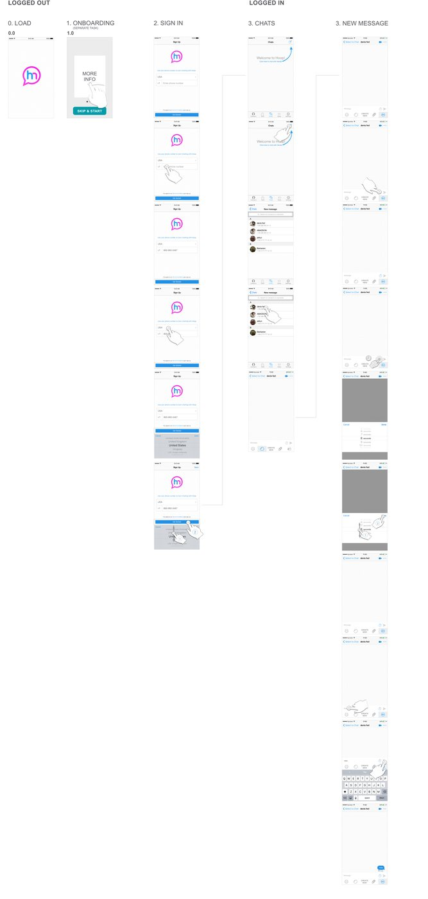
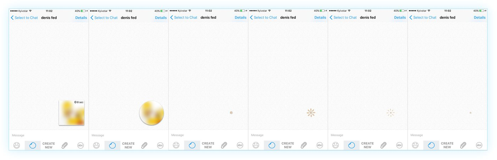

Mobile App · Messaging
Messenger App
UI, UX, and motion design for a mobile messenger. From user flows to a polished interface and animated interactions.

User flows
First launch and sign-up
I mapped the journey from the first launch through sign-up and sign-in, so the entry into the app stays clear and quick.

User flows
Sign-up and sign-in paths
Every state and branch of authentication, laid out so engineers could build without guessing the edge cases.

Interface
UI and UX in detail
Chat, lists, and controls designed as one consistent system, tuned for one-handed mobile use.

Motion
Animated interactions
Motion design that guides attention and makes the app feel alive, without getting in the way of the conversation.
